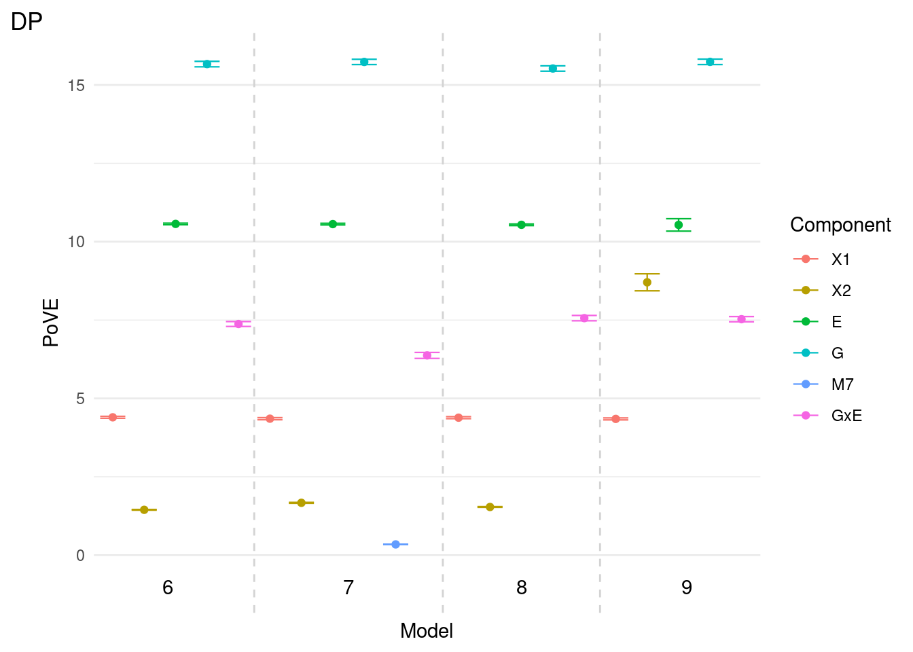
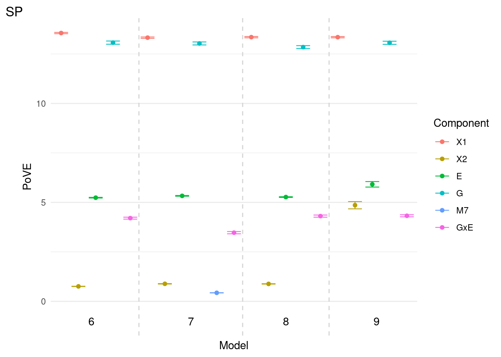
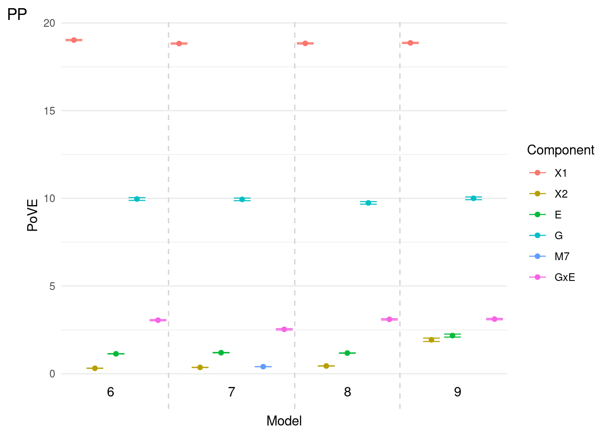
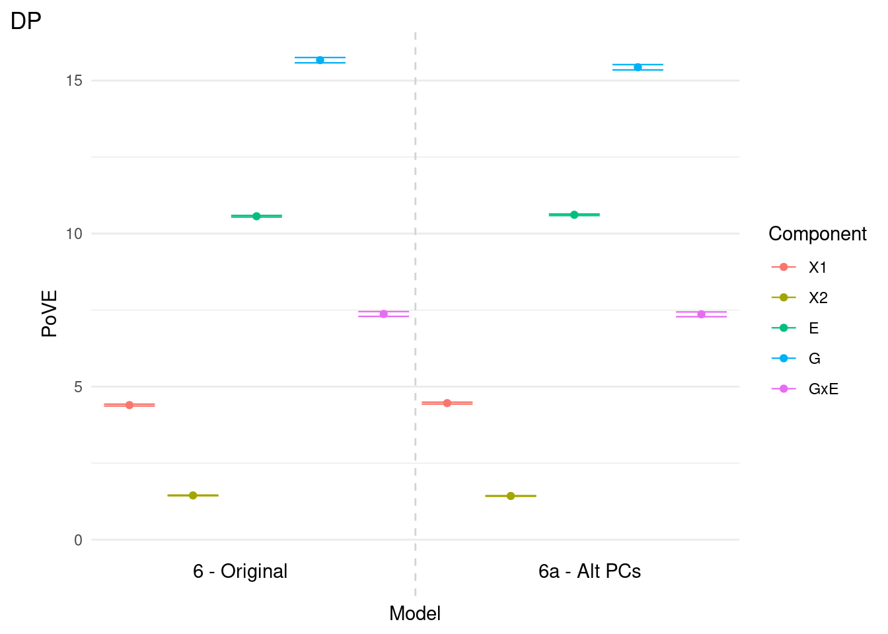
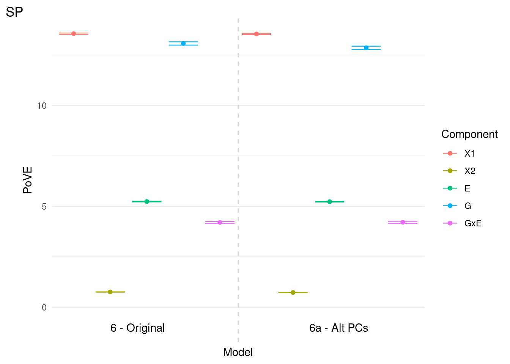
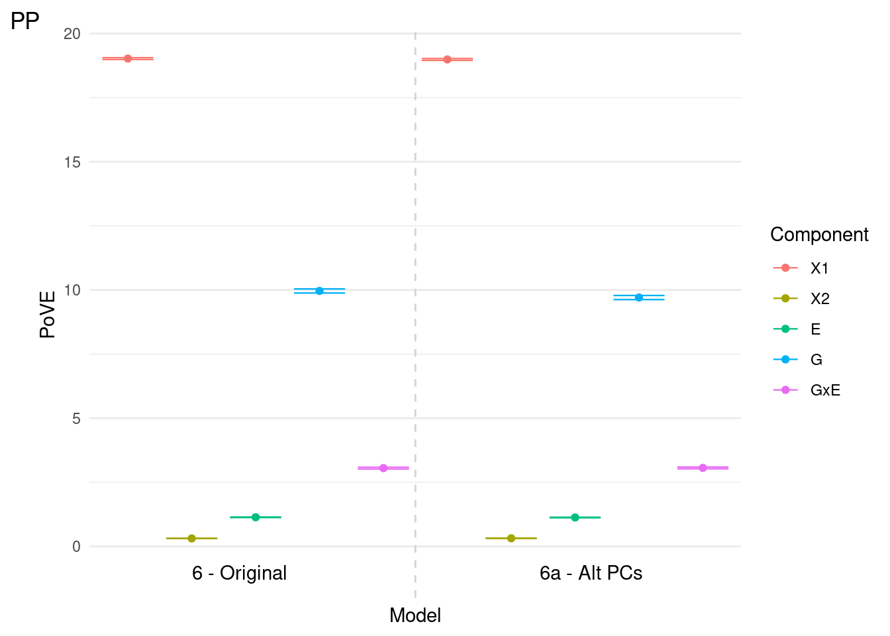
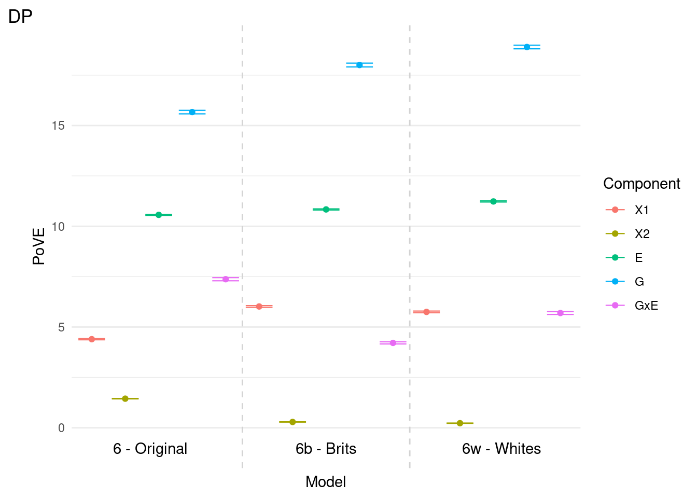
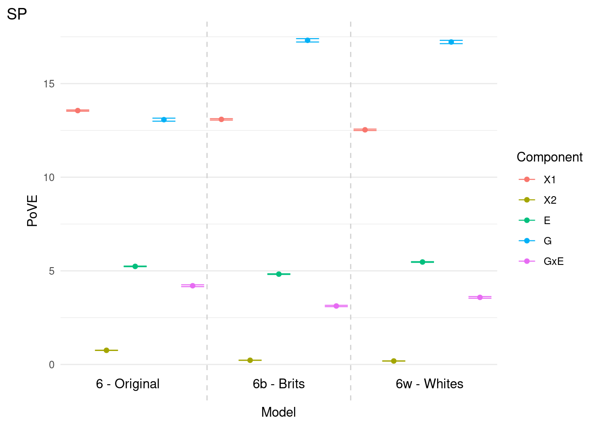
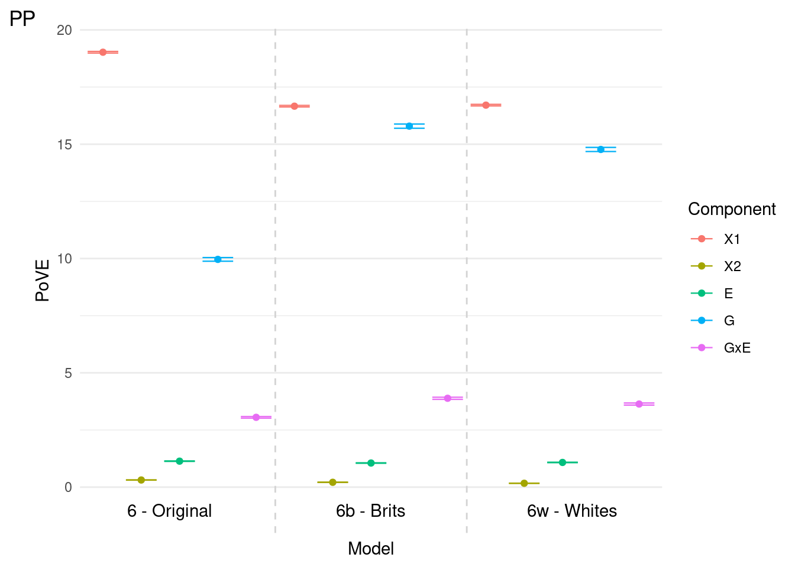

GxE Multi-Ancestry Supplementary Analysis
Last updated: 2025-12-30
Checks: 6 1
Knit directory: GxE_multi_ancestry/
This reproducible R Markdown analysis was created with workflowr (version 1.7.1). The Checks tab describes the reproducibility checks that were applied when the results were created. The Past versions tab lists the development history.
Great! Since the R Markdown file has been committed to the Git repository, you know the exact version of the code that produced these results.
The global environment had objects present when the code in the R
Markdown file was run. These objects can affect the analysis in your R
Markdown file in unknown ways. For reproduciblity it’s best to always
run the code in an empty environment. Use wflow_publish or
wflow_build to ensure that the code is always run in an
empty environment.
The following objects were defined in the global environment when these results were created:
| Name | Class | Size |
|---|---|---|
| gg | list | 176 bytes |
| hr | function | 10.3 Kb |
| humanise | function | 8.4 Kb |
| humanize | function | 8.4 Kb |
| set_gxe | function | 560 bytes |
| set_mult | function | 560 bytes |
| wb | function | 1.5 Kb |
| wp | function | 1.5 Kb |
| wv | function | 1.5 Kb |
The command set.seed(20240808) was run prior to running
the code in the R Markdown file. Setting a seed ensures that any results
that rely on randomness, e.g. subsampling or permutations, are
reproducible.
Great job! Recording the operating system, R version, and package versions is critical for reproducibility.
Nice! There were no cached chunks for this analysis, so you can be confident that you successfully produced the results during this run.
Great job! Using relative paths to the files within your workflowr project makes it easier to run your code on other machines.
Great! You are using Git for version control. Tracking code development and connecting the code version to the results is critical for reproducibility.
The results in this page were generated with repository version 5d1ada4. See the Past versions tab to see a history of the changes made to the R Markdown and HTML files.
Note that you need to be careful to ensure that all relevant files for
the analysis have been committed to Git prior to generating the results
(you can use wflow_publish or
wflow_git_commit). workflowr only checks the R Markdown
file, but you know if there are other scripts or data files that it
depends on. Below is the status of the Git repository when the results
were generated:
Ignored files:
Ignored: .Rhistory
Ignored: .Rprofile
Ignored: .Rproj.user/
Ignored: analysis/.DS_Store
Ignored: analysis/._BFP_ethnicity_cohort_violin_box_plot_improved_20241015.png
Ignored: analysis/._act0_d_ethnicity_cohort_violin_box_plot_improved_20241015.png
Ignored: analysis/._alc1_ethnicity_cohort_violin_box_plot_improved_20241015.png
Ignored: analysis/._boxplot_ofDP0a_across_ethnicities.png
Ignored: analysis/._boxplot_ofDP0avsethn1_mixed.png
Ignored: analysis/._histogram_ofDP0avsethn1_asian.png
Ignored: analysis/._histogram_ofDP0avsethn1_black.png
Ignored: analysis/._histogram_ofSP0avsethn1_mixed.png
Ignored: analysis/._sleep_d_ethnicity_cohort_violin_box_plot_improved_20241015.png
Ignored: code/.DS_Store
Ignored: code/dump/
Ignored: code/extra/
Ignored: code/scripts/.DS_Store
Ignored: code/scripts/processing_scripts/
Ignored: data/
Ignored: output/
Ignored: plots/
Untracked files:
Untracked: .gitattributes
Untracked: .snakemake/
Untracked: GxE_multi_ancestry.Rproj
Untracked: _workflowr.yml
Untracked: analysis/._.DS_Store
Untracked: code/amon/
Untracked: code/brit_24k.yaml
Untracked: code/mult.yaml
Untracked: code/nklimko/
Untracked: code/scripts/mult/
Untracked: code/scripts/plots_scripts/manuscript_plots/Figure_4_new.R
Untracked: code/scripts/white_24k/
Untracked: code/snake7/
Unstaged changes:
Modified: analysis/qqtop.Rmd
Modified: code/white_24k.yaml
Note that any generated files, e.g. HTML, png, CSS, etc., are not included in this status report because it is ok for generated content to have uncommitted changes.
These are the previous versions of the repository in which changes were
made to the R Markdown (analysis/newport.Rmd) and HTML
(docs/newport.html) files. If you’ve configured a remote
Git repository (see ?wflow_git_remote), click on the
hyperlinks in the table below to view the files as they were in that
past version.
| File | Version | Author | Date | Message |
|---|---|---|---|---|
| Rmd | 5d1ada4 | nklimko | 2025-12-30 | wflow_publish(fullpath) |
| html | f7a4090 | nklimko | 2025-12-19 | Build site. |
| Rmd | 59dd06f | nklimko | 2025-12-19 | wflow_publish(fullpath) |
| html | c71ceac | nklimko | 2025-12-18 | Build site. |
| Rmd | 5018ef6 | nklimko | 2025-12-18 | wflow_publish(fullpath) |
| html | 43255dc | nklimko | 2025-12-18 | Build site. |
| Rmd | 64181be | nklimko | 2025-12-18 | wflow_publish(fullpath) |
library(ggcorrplot)
library(data.table)
options(scipen=999)
# kable function for model comparisons
snipper <- function(tabble){
# select columns of interest
micols <- c('comp', 'model', 'mean')
# subset table
subtab <- tabble[,micols, with=0]
# order by component then model)
subtab <- subtab[order(comp, model),]
# clean column names
names(subtab) <- c('Component', 'Model', 'PoVE')
# simplify PoVE for legibility
subtab$PoVE <- round(subtab$PoVE, 2)
#print table
kable(subtab, 'simple')
}
# plotting function
matter <- function(datanow, fulltitle, montag=NULL, mod7=TRUE){
plothole <- ggplot(data=datanow, aes(x=fax, y=mean))+
# scale_color_manual(discrete=T, values = c('A_X1', 'B_X2', 'C_E', 'D_G', 'E_M7', 'F_GxE'), labels = c('X1', 'X2', 'E', 'G', 'M7', 'GxE'))+
{if(mod7) scale_color_discrete(labels = c('X1', 'X2', 'E', 'G', 'M7', 'GxE'))}+
{if(!mod7) scale_color_discrete(labels = c('X1', 'X2', 'E', 'G', 'GxE'))}+
geom_point(aes(color=comp2))+
# geom_text(aes(label=modnum))+
geom_errorbar(aes(ymin = lower, ymax = upper, color=comp2),
width = 0.8, linewidth = 0.4, alpha = 1) +
# labs(title='Model 8 Variance Components')+
labs(title=fulltitle, color='Component', tag=montag)+
xlab('Model')+
# xlab(NULL)+
ylab('PoVE')+
theme_minimal()+
theme(axis.text.x = element_blank(),
panel.grid.major.x = element_blank(),
panel.grid.minor.x = element_blank())+
geom_vline(xintercept = verty, linetype=2, color='lightgray')+
geom_text(data=modcode, aes(label=mn, x = x, y = y), inherit.aes=FALSE)
return(plothole)
}
# full table of variance component effect sizes
matte <- fread('output/vault/fullport/varcomps.txt')# Variance component readin ----
# split by trait
mat_dp <- matte[trait=='DP',]
mat_sp <- matte[trait=='SP',]
mat_pp <- matte[trait=='PP',]
# alt model 6 gen pcs
mod1 <- c('6', '6a')
mat_dp_pcs <- mat_dp[modnum %in% mod1,]
mat_sp_pcs <- mat_sp[modnum %in% mod1,]
mat_pp_pcs <- mat_pp[modnum %in% mod1,]
# alt model 6 ancestry grouping
mod2 <- c('6', '6b', '6w')
mat_dp_alt <- mat_dp[modnum %in% mod2,]
mat_sp_alt <- mat_sp[modnum %in% mod2,]
mat_pp_alt <- mat_pp[modnum %in% mod2,]
# base model 6 vs new models 7-9
mod3 <- as.character(6:9)
mat_dp_num <- mat_dp[modnum %in% mod3,]
mat_sp_num <- mat_sp[modnum %in% mod3,]
mat_pp_num <- mat_pp[modnum %in% mod3,]
# Variance component plot formatting ----
# indexes of line breaks - model 6 pcs
# verty <- c(1.5, 3.5, 6.5, 9.5, 13.5, 17.5, 22.5, 27.5, 33.5)
verty <- 0.5 + cumsum(unlist(table(mat_dp_pcs$model)))
verty <- verty[-length(verty)]
# add on hardpoint ends
verty2 <- c(0, verty, nrow(mat_dp_pcs)+1)
# calculates midpoint of each section to place Model Number below x axis
verty3 <- (verty2[2:length(verty2)] - verty2[1:(length(verty2) - 1)]) / 2 + verty2[1:(length(verty2) - 1)]
altnumber <- c('6 - Original', '6a - Alt PCs')
#matter function plots model number at specified breakpoint at y = -1 for each label.
modcode <- data.table(mn=altnumber, x=verty3, y=-1)
dpc <- matter(mat_dp_pcs, fulltitle=NULL, montag='DP', mod7=FALSE)
spc <- matter(mat_sp_pcs, fulltitle=NULL, montag='SP', mod7=FALSE)
ppc <- matter(mat_pp_pcs, fulltitle=NULL, montag='PP', mod7=FALSE)
# print(plot_grid(dpc, spc, ppc, ncol=1))
# indexes of line breaks - model 6 white groups
# verty <- c(1.5, 3.5, 6.5, 9.5, 13.5, 17.5, 22.5, 27.5, 33.5)
verty <- 0.5 + cumsum(unlist(table(mat_dp_alt$model)))
verty <- verty[-length(verty)]
# add on hardpoint ends
verty2 <- c(0, verty, nrow(mat_dp_alt)+1)
# calculates midpoint of each section to place Model Number below x axis
verty3 <- (verty2[2:length(verty2)] - verty2[1:(length(verty2) - 1)]) / 2 + verty2[1:(length(verty2) - 1)]
altnumber <- c('6 - Original', '6b - Brits', '6w - Whites')
#matter function plots model number at specified breakpoint at y = -1 for each label.
modcode <- data.table(mn=altnumber, x=verty3, y=-1)
dalt <- matter(mat_dp_alt, fulltitle=NULL, montag='DP', mod7=FALSE)
salt <- matter(mat_sp_alt, fulltitle=NULL, montag='SP', mod7=FALSE)
palt <- matter(mat_pp_alt, fulltitle=NULL, montag='PP', mod7=FALSE)
# print(plot_grid(dalt, salt, palt, ncol=1))
# indexes of line breaks - models 7-9
# verty <- c(1.5, 3.5, 6.5, 9.5, 13.5, 17.5, 22.5, 27.5, 33.5)
verty <- 0.5 + cumsum(unlist(table(mat_dp_num$model)))
verty <- verty[-length(verty)]
# add on hardpoint ends
verty2 <- c(0, verty, nrow(mat_dp_num)+1)
# calculates midpoint of each section to place Model Number below x axis
verty3 <- (verty2[2:length(verty2)] - verty2[1:(length(verty2) - 1)]) / 2 + verty2[1:(length(verty2) - 1)]
# altnumber <- c('6 - Original', '7 - ','8', '9')
altnumber <- as.character(6:9)
#matter function plots model number at specified breakpoint at y = -1 for each label.
modcode <- data.table(mn=altnumber, x=verty3, y=-1)
dnum <- matter(mat_dp_num, fulltitle=NULL, montag='DP', mod7=TRUE)
snum <- matter(mat_sp_num, fulltitle=NULL, montag='SP', mod7=TRUE)
pnum <- matter(mat_pp_num, fulltitle=NULL, montag='PP', mod7=TRUE)
# print(plot_grid(dnum, snum, pnum, ncol=1))
# ANOVA readin ----
library(ggcorrplot)
# read in data, transpose
temp_alt <- readRDS('output/vault/fullport/anova.rds')
tempt <- t(temp_alt)Overview
Six subsections:
- New Models
- Alternate Model 6 Populations
- ANOVA: Environment ~ Ancestry
- GxE-GWAS Variant Selection
- GxE-GWAS Variant Analysis
- GxE-GWAS BMI Covariate
New Models
Models 7, 8, and 9 are new. Model 6 is included for reference to existing terms.
Formulas
- \(\text{Model 6: } \mathbf{y} = \mathbf{X}_{1}\boldsymbol{\beta}_{1} + \mathbf{X}_{2}\boldsymbol{\beta}_{2} + \mathbf{g} + \mathbf{e} + \mathbf{g \times e} + \boldsymbol{\varepsilon}\)
- \(\text{Model 7: } \mathbf{y} = \mathbf{X}_{1}\boldsymbol{\beta}_{1} + \mathbf{X}_{2}\boldsymbol{\beta}_{2} + \mathbf{g} + \mathbf{e} + \mathbf{i} + \mathbf{g \times e} + \boldsymbol{\varepsilon}\)
- \(\text{Model 8: } \mathbf{y} = \mathbf{X}_{1}\boldsymbol{\beta}_{1} + \mathbf{X}_{3}\boldsymbol{\beta}_{3} + \mathbf{g} + \mathbf{e} + \mathbf{g \times e} + \boldsymbol{\varepsilon}\)
- \(\text{Model 9: } \mathbf{y} = \mathbf{X}_{1}\boldsymbol{\beta}_{1} + \mathbf{X}_{4}\boldsymbol{\beta}_{4} + \mathbf{g} + \mathbf{e} + \mathbf{g \times e} + \boldsymbol{\varepsilon}\)
Unique Terms
- Model 7: \(\mathbf{i}\) is a \(n\)-vector of random interaction values, \(\mathbf{i} \sim \mathcal{N}(\mathbf{0}, \mathbf{K}_{top.plink \times e} \sigma^2_{top.plink \times e})\),
- Model 8: \(\mathbf{X}_{3}\) is a \(n \times c\) design matrix with \(c = 20\) columns including the top 10 genetic principal components (plink), the top 10 eigenvectors of the plink interaction relationship matrix (IRM),
- Model 8: \(\boldsymbol{\beta}_{3}\) is a \(c\)-vector of their fixed effects,
- Model 9: \(\mathbf{X}_{4}\) is a \(n \times d\) design matrix with \(d = 23\) columns including the top 10 genetic principal components, the top 10 eigenvectors of the plink IRM, and the top 3 eigenvectors of the Environmental Relationship Matrix (ERM),
- Model 9: \(\boldsymbol{\beta}_{4}\) is a \(d\)-vector of their fixed effects,
Descriptions
Model 7 includes an additional variance component \(\mathbf{i}\) that implements a modified interaction relationship matrix. The modified IRM is given by \(\mathbf{K}_{top.plink \times e} = \mathbf{K}_{top.plink} \odot \mathbf{K}_e\) where \(\mathbf{K}_{top.plink}\) is the GRM derived from the top 10 eigenvectors of the full plink GRM.
Model 8 includes the top 10 eigenvectors of the full plink IRM as additional covariates (along with top 10 genetic PCs) for a total of 20 covariates in \(\mathbf{X}_3\). This IRM is the Hadamard product of the plink GRM and the full ERM, given by \(\mathbf{K}_{g.plink \times e} = \mathbf{K}_{g.plink} \odot \mathbf{K}_e\).
Model 9 expands upon Model 8 by including the top 3 eigenvectors of the full ERM as additional covariates for a total of 23 covariates in \(\mathbf{X}_4\).
Estimates of effect sizes
Diastolic Pressure

| Version | Author | Date |
|---|---|---|
| 43255dc | nklimko | 2025-12-18 |
| Component | Model | PoVE |
|---|---|---|
| E | Model 6 | 10.57 |
| E | Model 7 | 10.56 |
| E | Model 8 | 10.54 |
| E | Model 9 | 10.53 |
| G | Model 6 | 15.67 |
| G | Model 7 | 15.73 |
| G | Model 8 | 15.52 |
| G | Model 9 | 15.74 |
| GxE | Model 6 | 7.37 |
| GxE | Model 7 | 6.37 |
| GxE | Model 8 | 7.56 |
| GxE | Model 9 | 7.53 |
| X1 | Model 6 | 4.40 |
| X1 | Model 7 | 4.35 |
| X1 | Model 8 | 4.39 |
| X1 | Model 9 | 4.35 |
| X2 | Model 6 | 1.45 |
| X2 | Model 7 | 1.67 |
| X2 | Model 8 | 1.54 |
| X2 | Model 9 | 8.70 |
| m7 | Model 7 | 0.34 |
Systolic Pressure

| Version | Author | Date |
|---|---|---|
| 43255dc | nklimko | 2025-12-18 |
| Component | Model | PoVE |
|---|---|---|
| E | Model 6 | 5.24 |
| E | Model 7 | 5.33 |
| E | Model 8 | 5.27 |
| E | Model 9 | 5.91 |
| G | Model 6 | 13.07 |
| G | Model 7 | 13.03 |
| G | Model 8 | 12.85 |
| G | Model 9 | 13.06 |
| GxE | Model 6 | 4.20 |
| GxE | Model 7 | 3.47 |
| GxE | Model 8 | 4.31 |
| GxE | Model 9 | 4.32 |
| X1 | Model 6 | 13.56 |
| X1 | Model 7 | 13.32 |
| X1 | Model 8 | 13.35 |
| X1 | Model 9 | 13.35 |
| X2 | Model 6 | 0.76 |
| X2 | Model 7 | 0.89 |
| X2 | Model 8 | 0.88 |
| X2 | Model 9 | 4.86 |
| m7 | Model 7 | 0.43 |
Pulse Pressure

| Version | Author | Date |
|---|---|---|
| 43255dc | nklimko | 2025-12-18 |
| Component | Model | PoVE |
|---|---|---|
| E | Model 6 | 1.14 |
| E | Model 7 | 1.20 |
| E | Model 8 | 1.18 |
| E | Model 9 | 2.18 |
| G | Model 6 | 9.96 |
| G | Model 7 | 9.94 |
| G | Model 8 | 9.74 |
| G | Model 9 | 10.00 |
| GxE | Model 6 | 3.05 |
| GxE | Model 7 | 2.53 |
| GxE | Model 8 | 3.10 |
| GxE | Model 9 | 3.12 |
| X1 | Model 6 | 19.02 |
| X1 | Model 7 | 18.83 |
| X1 | Model 8 | 18.84 |
| X1 | Model 9 | 18.86 |
| X2 | Model 6 | 0.31 |
| X2 | Model 7 | 0.36 |
| X2 | Model 8 | 0.44 |
| X2 | Model 9 | 1.94 |
| m7 | Model 7 | 0.40 |
Alternate Model 6 Populations
The model 6 framework is used for the following analyses:
\[\text{Model 6: } \mathbf{y} = \mathbf{X}_{1}\boldsymbol{\beta}_{1} + \mathbf{X}_{2}\boldsymbol{\beta}_{2} + \mathbf{g} + \mathbf{e} + \mathbf{g \times e} + \boldsymbol{\varepsilon}\]
Genetic Principal Components
In the original model, \(\mathbf{X}_2\) is comprised of the top 10 genetic principal components computed by us. In the alternate model, we instead used the top 10 genetic principal components provided by the UK Biobank. The estimation of variance components is shown here:

Diastolic Pressure

| Version | Author | Date |
|---|---|---|
| 43255dc | nklimko | 2025-12-18 |
| Component | Model | PoVE |
|---|---|---|
| E | Model 6 | 10.57 |
| E | Model 6a | 10.61 |
| G | Model 6 | 15.67 |
| G | Model 6a | 15.44 |
| GxE | Model 6 | 7.37 |
| GxE | Model 6a | 7.36 |
| X1 | Model 6 | 4.40 |
| X1 | Model 6a | 4.46 |
| X2 | Model 6 | 1.45 |
| X2 | Model 6a | 1.43 |
Systolic Pressure

| Version | Author | Date |
|---|---|---|
| 43255dc | nklimko | 2025-12-18 |
| Component | Model | PoVE |
|---|---|---|
| E | Model 6 | 5.24 |
| E | Model 6a | 5.23 |
| G | Model 6 | 13.07 |
| G | Model 6a | 12.86 |
| GxE | Model 6 | 4.20 |
| GxE | Model 6a | 4.21 |
| X1 | Model 6 | 13.56 |
| X1 | Model 6a | 13.55 |
| X2 | Model 6 | 0.76 |
| X2 | Model 6a | 0.73 |
Pulse Pressure

| Version | Author | Date |
|---|---|---|
| 43255dc | nklimko | 2025-12-18 |
| Component | Model | PoVE |
|---|---|---|
| E | Model 6 | 1.14 |
| E | Model 6a | 1.13 |
| G | Model 6 | 9.96 |
| G | Model 6a | 9.71 |
| GxE | Model 6 | 3.05 |
| GxE | Model 6a | 3.06 |
| X1 | Model 6 | 19.02 |
| X1 | Model 6a | 18.99 |
| X2 | Model 6 | 0.31 |
| X2 | Model 6a | 0.32 |
Estimates of effect sizes are consistent between models, suggesting our calculation of genetic PCs is appropriate.
Ancestry Composition
We assessed the estimate of GxE effect sizes by comparing the multi-ancestry estimates to models using different populations.
In these models, the \(\mathbf{g}\) and \(\mathbf{g \times e}\) components depend on the following populations:
- Original: 25k individuals multi-ancestry, including 15k whites (British and others)
- Brits: 25k individuals of British ancestry exclusively
- Whites: 25k individuals of white ancestry, including British and others
These results are shown here:
Diastolic Pressure

| Version | Author | Date |
|---|---|---|
| 43255dc | nklimko | 2025-12-18 |
| Component | Model | PoVE |
|---|---|---|
| E | Model 6 | 10.57 |
| E | Model 6b | 10.84 |
| E | Model 6w | 11.23 |
| G | Model 6 | 15.67 |
| G | Model 6b | 18.00 |
| G | Model 6w | 18.90 |
| GxE | Model 6 | 7.37 |
| GxE | Model 6b | 4.21 |
| GxE | Model 6w | 5.70 |
| X1 | Model 6 | 4.40 |
| X1 | Model 6b | 6.02 |
| X1 | Model 6w | 5.75 |
| X2 | Model 6 | 1.45 |
| X2 | Model 6b | 0.29 |
| X2 | Model 6w | 0.23 |
Systolic Pressure

| Version | Author | Date |
|---|---|---|
| 43255dc | nklimko | 2025-12-18 |
| Component | Model | PoVE |
|---|---|---|
| E | Model 6 | 5.24 |
| E | Model 6b | 4.82 |
| E | Model 6w | 5.47 |
| G | Model 6 | 13.07 |
| G | Model 6b | 17.31 |
| G | Model 6w | 17.22 |
| GxE | Model 6 | 4.20 |
| GxE | Model 6b | 3.12 |
| GxE | Model 6w | 3.58 |
| X1 | Model 6 | 13.56 |
| X1 | Model 6b | 13.09 |
| X1 | Model 6w | 12.53 |
| X2 | Model 6 | 0.76 |
| X2 | Model 6b | 0.22 |
| X2 | Model 6w | 0.19 |
Pulse Pressure

| Version | Author | Date |
|---|---|---|
| 43255dc | nklimko | 2025-12-18 |
| Component | Model | PoVE |
|---|---|---|
| E | Model 6 | 1.14 |
| E | Model 6b | 1.05 |
| E | Model 6w | 1.08 |
| G | Model 6 | 9.96 |
| G | Model 6b | 15.79 |
| G | Model 6w | 14.77 |
| GxE | Model 6 | 3.05 |
| GxE | Model 6b | 3.89 |
| GxE | Model 6w | 3.64 |
| X1 | Model 6 | 19.02 |
| X1 | Model 6b | 16.66 |
| X1 | Model 6w | 16.71 |
| X2 | Model 6 | 0.31 |
| X2 | Model 6b | 0.21 |
| X2 | Model 6w | 0.17 |
For all traits, the PoVE of the genetic component \(\mathbf{g}\) increases from the original population to both subsets of white individuals for all three blood pressure traits.
The PoVE for the interaction term \(\mathbf{g \times e}\) is not consistent across traits:
- Diastolic pressure : Relative decrease of 23-43% (7.37 -> 4.21-5.70)
- Systolic pressure : Relative decrease of 15-26% (4.20 - 3.12-3.58)
- Pulse pressure : Relative increase of 18-27% (3.05 -> 3.60-3.89)
ANOVA: Environment ~ Ancestry
Assess environmental effects by ancestry. Analysis of variance models where each environment was regressed across ancestry groups given by \(env \sim anc\) where \(env\) is a single environment and \(anc\) is a factor coding for ancestry, containing the five classes:
- Asian
- Black
- Chinese
- Mixed
- White
ANOVA Test Results
Ethnicity was extremely significant (p-value less than 1e-300) in the top six environments (alcohol intake, beef, cheese, coffee, pork, and Townsend index) for the respective ANOVA tests. The only environment that did not vary significantly across ancestry groups was daily activity levels (act0_d p = 0.141). All other environments had a significant difference in variance for at least one ancestry group.
P-values only
pvals <- fread('output/anova/misc/pvals.txt')
pvals$`P value` <- scientific(pvals$`P value`)
kable(pvals, 'simple', digits = 4)| Environment | P value |
|---|---|
| alc1 | 0.00e+00 |
| beef | 0.00e+00 |
| cheese | 0.00e+00 |
| coffee | 0.00e+00 |
| pork | 0.00e+00 |
| Townsend | 0.00e+00 |
| meat_proc | 8.70e-299 |
| poultry | 3.04e-269 |
| fish_lean | 2.67e-264 |
| smoked_past | 1.08e-258 |
| fish_oily | 1.24e-226 |
| veg_cook | 1.49e-158 |
| tea | 3.05e-134 |
| sleep_d | 1.86e-121 |
| waist | 8.52e-118 |
| BFP | 2.26e-107 |
| salt | 4.04e-100 |
| lamb | 1.24e-91 |
| sleep_dev | 1.24e-79 |
| TVtime | 1.18e-56 |
| getup | 4.51e-40 |
| smoking_now | 5.74e-22 |
| act0_d | 1.41e-01 |
Full Table
options(scipen = 2)
anovatable <- fread('output/anova/misc/all_anova.txt')
anovatable$Term <- gsub('Ethincity','Ethnicity', anovatable$Term)
anovatable$`Pr(>F)` <- scientific(anovatable$`Pr(>F)`)
kable(anovatable, 'simple', digits=2)| Environment | Term | Df | Sum Sq | Mean Sq | F value | Pr(>F) |
|---|---|---|---|---|---|---|
| act0_d | Ethnicity | 4 | 6.90 | 1.72 | 1.72 | 1.41e-01 |
| act0_d | Residuals | 24473 | 24470.10 | 1.00 | ||
| alc1 | Ethnicity | 4 | 4156.49 | 1039.12 | 1251.47 | 0.00e+00 |
| alc1 | Residuals | 24473 | 20320.51 | 0.83 | ||
| beef | Ethnicity | 4 | 3581.43 | 895.36 | 1048.65 | 0.00e+00 |
| beef | Residuals | 24473 | 20895.57 | 0.85 | ||
| BFP | Ethnicity | 4 | 497.13 | 124.28 | 126.84 | 2.26e-107 |
| BFP | Residuals | 24473 | 23979.87 | 0.98 | ||
| cheese | Ethnicity | 4 | 2053.33 | 513.33 | 560.25 | 0.00e+00 |
| cheese | Residuals | 24473 | 22423.67 | 0.92 | ||
| coffee | Ethnicity | 4 | 2219.70 | 554.93 | 610.17 | 0.00e+00 |
| coffee | Residuals | 24473 | 22257.30 | 0.91 | ||
| fish_lean | Ethnicity | 4 | 1196.55 | 299.14 | 314.46 | 2.67e-264 |
| fish_lean | Residuals | 24473 | 23280.45 | 0.95 | ||
| fish_oily | Ethnicity | 4 | 1030.68 | 257.67 | 268.95 | 1.24e-226 |
| fish_oily | Residuals | 24473 | 23446.32 | 0.96 | ||
| getup | Ethnicity | 4 | 189.61 | 47.40 | 47.76 | 4.51e-40 |
| getup | Residuals | 24473 | 24287.39 | 0.99 | ||
| lamb | Ethnicity | 4 | 425.69 | 106.42 | 108.29 | 1.24e-91 |
| lamb | Residuals | 24473 | 24051.31 | 0.98 | ||
| meat_proc | Ethnicity | 4 | 1347.37 | 336.84 | 356.41 | 8.70e-299 |
| meat_proc | Residuals | 24473 | 23129.63 | 0.95 | ||
| pork | Ethnicity | 4 | 3625.45 | 906.36 | 1063.78 | 0.00e+00 |
| pork | Residuals | 24473 | 20851.55 | 0.85 | ||
| poultry | Ethnicity | 4 | 1218.24 | 304.56 | 320.46 | 3.04e-269 |
| poultry | Residuals | 24473 | 23258.76 | 0.95 | ||
| salt | Ethnicity | 4 | 464.25 | 116.06 | 118.29 | 4.04e-100 |
| salt | Residuals | 24473 | 24012.75 | 0.98 | ||
| sleep_d | Ethnicity | 4 | 560.83 | 140.21 | 143.47 | 1.86e-121 |
| sleep_d | Residuals | 24473 | 23916.17 | 0.98 | ||
| sleep_dev | Ethnicity | 4 | 371.06 | 92.76 | 94.18 | 1.24e-79 |
| sleep_dev | Residuals | 24473 | 24105.94 | 0.99 | ||
| smoked_past | Ethnicity | 4 | 1171.94 | 292.99 | 307.67 | 1.08e-258 |
| smoked_past | Residuals | 24473 | 23305.06 | 0.95 | ||
| smoking_now | Ethnicity | 4 | 105.58 | 26.39 | 26.50 | 5.74e-22 |
| smoking_now | Residuals | 24473 | 24371.42 | 1.00 | ||
| tea | Ethnicity | 4 | 618.49 | 154.62 | 158.61 | 3.05e-134 |
| tea | Residuals | 24473 | 23858.51 | 0.97 | ||
| Townsend | Ethnicity | 4 | 4293.15 | 1073.29 | 1301.36 | 0.00e+00 |
| Townsend | Residuals | 24473 | 20183.85 | 0.82 | ||
| TVtime | Ethnicity | 4 | 265.95 | 66.49 | 67.21 | 1.18e-56 |
| TVtime | Residuals | 24473 | 24211.05 | 0.99 | ||
| veg_cook | Ethnicity | 4 | 727.71 | 181.93 | 187.47 | 1.49e-158 |
| veg_cook | Residuals | 24473 | 23749.29 | 0.97 | ||
| waist | Ethnicity | 4 | 544.29 | 136.07 | 139.15 | 8.52e-118 |
| waist | Residuals | 24473 | 23932.71 | 0.98 |
All Ethnicity Terms
anova_ethn <- anovatable[Term=='Ethnicity',]
kable(anova_ethn, 'simple', digits=2)| Environment | Term | Df | Sum Sq | Mean Sq | F value | Pr(>F) |
|---|---|---|---|---|---|---|
| act0_d | Ethnicity | 4 | 6.90 | 1.72 | 1.72 | 1.41e-01 |
| alc1 | Ethnicity | 4 | 4156.49 | 1039.12 | 1251.47 | 0.00e+00 |
| beef | Ethnicity | 4 | 3581.43 | 895.36 | 1048.65 | 0.00e+00 |
| BFP | Ethnicity | 4 | 497.13 | 124.28 | 126.84 | 2.26e-107 |
| cheese | Ethnicity | 4 | 2053.33 | 513.33 | 560.25 | 0.00e+00 |
| coffee | Ethnicity | 4 | 2219.70 | 554.93 | 610.17 | 0.00e+00 |
| fish_lean | Ethnicity | 4 | 1196.55 | 299.14 | 314.46 | 2.67e-264 |
| fish_oily | Ethnicity | 4 | 1030.68 | 257.67 | 268.95 | 1.24e-226 |
| getup | Ethnicity | 4 | 189.61 | 47.40 | 47.76 | 4.51e-40 |
| lamb | Ethnicity | 4 | 425.69 | 106.42 | 108.29 | 1.24e-91 |
| meat_proc | Ethnicity | 4 | 1347.37 | 336.84 | 356.41 | 8.70e-299 |
| pork | Ethnicity | 4 | 3625.45 | 906.36 | 1063.78 | 0.00e+00 |
| poultry | Ethnicity | 4 | 1218.24 | 304.56 | 320.46 | 3.04e-269 |
| salt | Ethnicity | 4 | 464.25 | 116.06 | 118.29 | 4.04e-100 |
| sleep_d | Ethnicity | 4 | 560.83 | 140.21 | 143.47 | 1.86e-121 |
| sleep_dev | Ethnicity | 4 | 371.06 | 92.76 | 94.18 | 1.24e-79 |
| smoked_past | Ethnicity | 4 | 1171.94 | 292.99 | 307.67 | 1.08e-258 |
| smoking_now | Ethnicity | 4 | 105.58 | 26.39 | 26.50 | 5.74e-22 |
| tea | Ethnicity | 4 | 618.49 | 154.62 | 158.61 | 3.05e-134 |
| Townsend | Ethnicity | 4 | 4293.15 | 1073.29 | 1301.36 | 0.00e+00 |
| TVtime | Ethnicity | 4 | 265.95 | 66.49 | 67.21 | 1.18e-56 |
| veg_cook | Ethnicity | 4 | 727.71 | 181.93 | 187.47 | 1.49e-158 |
| waist | Ethnicity | 4 | 544.29 | 136.07 | 139.15 | 8.52e-118 |
All Residual Terms
anova_resid <- anovatable[Term=='Residuals',]
anova_resid$`F value` <- NULL
anova_resid$`Pr(>F)` <- NULL
kable(anova_resid, 'simple', digits=2)| Environment | Term | Df | Sum Sq | Mean Sq |
|---|---|---|---|---|
| act0_d | Residuals | 24473 | 24470.10 | 1.00 |
| alc1 | Residuals | 24473 | 20320.51 | 0.83 |
| beef | Residuals | 24473 | 20895.57 | 0.85 |
| BFP | Residuals | 24473 | 23979.87 | 0.98 |
| cheese | Residuals | 24473 | 22423.67 | 0.92 |
| coffee | Residuals | 24473 | 22257.30 | 0.91 |
| fish_lean | Residuals | 24473 | 23280.45 | 0.95 |
| fish_oily | Residuals | 24473 | 23446.32 | 0.96 |
| getup | Residuals | 24473 | 24287.39 | 0.99 |
| lamb | Residuals | 24473 | 24051.31 | 0.98 |
| meat_proc | Residuals | 24473 | 23129.63 | 0.95 |
| pork | Residuals | 24473 | 20851.55 | 0.85 |
| poultry | Residuals | 24473 | 23258.76 | 0.95 |
| salt | Residuals | 24473 | 24012.75 | 0.98 |
| sleep_d | Residuals | 24473 | 23916.17 | 0.98 |
| sleep_dev | Residuals | 24473 | 24105.94 | 0.99 |
| smoked_past | Residuals | 24473 | 23305.06 | 0.95 |
| smoking_now | Residuals | 24473 | 24371.42 | 1.00 |
| tea | Residuals | 24473 | 23858.51 | 0.97 |
| Townsend | Residuals | 24473 | 20183.85 | 0.82 |
| TVtime | Residuals | 24473 | 24211.05 | 0.99 |
| veg_cook | Residuals | 24473 | 23749.29 | 0.97 |
| waist | Residuals | 24473 | 23932.71 | 0.98 |
LM Coefficients
Table
| Asian | Black | Chinese | Mixed | White | |
|---|---|---|---|---|---|
| Townsend | 0.209 | 0.922 | 0.018 | 0.228 | -0.283 |
| act0_d | 0.001 | -0.035 | -0.036 | 0.029 | 0.007 |
| TVtime | -0.154 | 0.195 | -0.227 | -0.006 | 0.011 |
| sleep_d | -0.025 | -0.361 | 0.064 | -0.042 | 0.088 |
| smoking_now | -0.039 | 0.038 | -0.107 | 0.256 | -0.014 |
| veg_cook | 0.272 | -0.036 | 0.621 | -0.082 | -0.091 |
| fish_oily | -0.386 | 0.346 | 0.111 | 0.010 | 0.022 |
| fish_lean | -0.481 | 0.146 | -0.070 | -0.024 | 0.105 |
| meat_proc | -0.474 | -0.115 | -0.045 | -0.002 | 0.158 |
| poultry | -0.418 | 0.365 | 0.248 | 0.011 | 0.020 |
| beef | -0.848 | 0.186 | 0.120 | 0.049 | 0.181 |
| lamb | 0.036 | 0.307 | -0.217 | 0.008 | -0.068 |
| pork | -0.709 | -0.078 | 1.280 | 0.062 | 0.143 |
| cheese | -0.288 | -0.468 | -0.654 | 0.098 | 0.208 |
| salt | 0.270 | 0.067 | -0.020 | 0.090 | -0.096 |
| tea | -0.133 | -0.326 | -0.063 | 0.008 | 0.112 |
| alc1 | 0.656 | 0.444 | 0.645 | -0.058 | -0.306 |
| waist | 0.060 | 0.170 | -0.734 | -0.154 | -0.005 |
| getup | -0.111 | -0.069 | -0.066 | -0.205 | 0.067 |
| coffee | -0.452 | -0.386 | -0.372 | 0.011 | 0.228 |
| smoked_past | -0.361 | -0.242 | -0.267 | 0.110 | 0.157 |
| BFP | 0.006 | 0.271 | -0.545 | 0.066 | -0.041 |
| sleep_dev | 0.027 | 0.285 | -0.025 | 0.082 | -0.077 |
GxE-GWAS Variant Selection
The full breakdown of selected SNPs is available in the QQ Plot Selection report. These results are summarized here:
| Trait | Lifestyle Variable | Variants |
|---|---|---|
| Diastolic pressure | cheese | 31 |
| Diastolic pressure | BFP | 8 |
| Diastolic pressure | tea | 5 |
| Diastolic pressure | poultry | 3 |
| Diastolic pressure | smoking_now | 2 |
| Systolic pressure | sleep_d | 43 |
| Systolic pressure | tea | 25 |
| Systolic pressure | pork | 21 |
| Systolic pressure | coffee | 10 |
| Systolic pressure | veg_cook | 6 |
| Systolic pressure | sleep_dev | 5 |
| Systolic pressure | TV_time | 2 |
| Pulse pressure | TV_time | 14 |
| Pulse pressure | salt | 11 |
| Pulse pressure | tea | 1 |
GxE-GWAS Variant Analysis
Variant Effect Predictor
| Diastolic | Systolic | Pulse |
|---|---|---|
| ACAN | ABCC1 | AC005042.4 |
| AKR1D1 | AC007556.3 | AC005042.5 |
| ARV1 | AC010148.1 | AC005786.3 |
| C16orf45 | AC104777.1 | AC009499.1 |
| C2orf71 | AC104777.4 | AC024158.1 |
| CCSER1 | AFTPH | ACY3 |
| CLEC2B | ANKEF1 | AGPAT2 |
| CNTNAP4 | ARPC3P5 | ALDH3B2 |
| CREB3L2 | ATP8B4 | AP003385.2 |
| CSRNP3 | C2orf71 | BPIFC |
| CTC-429P9.2 | C6orf201 | C1orf123 |
| EPB41L3 | CACNA2D1 | C6orf118 |
| FRMD4A | CDH5 | CACNA1C |
| ITGB2 | CMC2 | CBX4 |
| LRRIQ4 | CNTNAP2 | CDC14A |
| MAP3K5 | CRHBP | CDH22 |
| MAP7 | CTD-2332E11.2 | CELF5 |
| MED26 | CTD-2396E7.10 | CES1 |
| MICAL2 | CTD-2396E7.9 | CNTNAP2 |
| PDE3A | DHRS9 | CPT2 |
| PGPEP1 | EIF4H | CREB5 |
| RP11-286N3.1 | FAM188A | CSMD1 |
| RP11-290C10.1 | GADL1 | CTC-339O9.2 |
| RP3-325F22.5 | GJA4 | CTD-2005H7.1 |
| SERPINA6 | GLYATL1 | CTD-2130O13.1 |
| SLC35E1 | HMGB1 | DDC |
| SPTLC3 | LAT2 | DENND2A |
| TMEM51 | LINC00896 | DPP10 |
| TMEM51-AS1 | LMBR1 | DSCAM |
| WNT7B | LMX1A | DSCAM-IT1 |
| LRP1B | DSCAML1 | |
| LSAMP | EMP2 | |
| MCHR2-AS1 | ENSAP1 | |
| MIR4674 | FAM184A | |
| MUC2 | FRMD4A | |
| MYH11 | FUT10 | |
| MYO5A | GALNTL6 | |
| NCAPD2 | HCG27 | |
| NLRP5 | IL36B | |
| NOTCH1 | KCNB2 | |
| OR10H1 | KCNIP1 | |
| OR10H3 | KCNK13 | |
| P2RY2 | KLF12 | |
| PACRG | KLHL23 | |
| PEX12P1 | LHFPL2 | |
| PFKP | LINC00686 | |
| PKN2 | LMX1A | |
| PLA2G4E | LRFN2 | |
| PPM1H | MACROD2 | |
| PRKAR1B | MAPK6 | |
| PRSS23 | MEG3 | |
| PTPRG | MFSD12 | |
| RELN | NCKAP5 | |
| RFPL1 | NUP214 | |
| RFPL1S | OPRD1 | |
| RIMBP2 | PARD3B | |
| RNA5SP394 | PARK2 | |
| ROBO2 | PELI2 | |
| RORA | PFKP | |
| RP11-1217F2.15 | PITRM1 | |
| RP11-154D3.1 | PITRM1-AS1 | |
| RP11-279F6.3 | PLXDC1 | |
| RP11-38C18.2 | PPP2R5E | |
| RP11-38C18.3 | PRDX2P2 | |
| RP11-563P16.1 | PRKAR1B | |
| RP11-611D20.2 | RCL1 | |
| RP11-662M24.2 | RN7SL198P | |
| RP11-736K20.5 | RNF150 | |
| RP11-739G5.1 | RP11-103J8.1 | |
| RP11-76N22.2 | RP11-120M18.2 | |
| RP11-780O24.2 | RP11-295P9.8 | |
| RP3-429O6.1 | RP11-349I1.2 | |
| RP3-510D11.1 | RP11-353N14.2 | |
| RP3-510D11.2 | RP11-386D6.2 | |
| RP5-839B4.8 | RP11-38C18.2 | |
| SCARB1 | RP11-38C18.3 | |
| SCARNA10 | RP11-544A12.8 | |
| SH3GL2 | RP11-551L14.4 | |
| SHANK3 | RP11-5P4.1 | |
| SLAIN2 | RP11-98G7.1 | |
| SMIM12 | RP3-510D11.1 | |
| SRBD1 | RP3-510D11.2 | |
| TMC2 | RP4-544H6.2 | |
| TUBB4A | RP5-1024G6.2 | |
| UBASH3A | SAMD4A | |
| UPF2 | SCAND3 | |
| USPL1 | SERPINA11 | |
| XXbac-B444P24.8 | SHROOM3 | |
| ZDHHC2 | SLC39A11 | |
| SLCO4A1 | ||
| SORBS2 | ||
| SPATA6L | ||
| SYN2 | ||
| TAAR6 | ||
| TAF8 | ||
| TBX4 | ||
| TMEM45A | ||
| XXbac-BPG299F13.14 | ||
| XXbac-BPG299F13.17 | ||
| YEATS2 | ||
| ZEB2 | ||
| ZNF423 | ||
| ZNF600 | ||
| ZPBP |
Ensembl’s variant effect predictor (VEP) tool identified 30, 89, and 104 genes for diastolic, systolic, and pulse pressure respectively.
Some of these genes were identified in more than one trait and have been included below:
| Diastolic | Systolic | Pulse |
|---|---|---|
| C2orf71 | C2orf71 | CNTNAP2 |
| FRMD4A | CNTNAP2 | FRMD4A |
| LMX1A | LMX1A | |
| PFKP | PFKP | |
| PRKAR1B | PRKAR1B | |
| RP11-38C18.2 | RP11-38C18.2 | |
| RP11-38C18.3 | RP11-38C18.3 | |
| RP3-510D11.1 | RP3-510D11.1 | |
| RP3-510D11.2 | RP3-510D11.2 |
g:Profiler Terms
g:Profiler: a functional analysis tool provided by the University of Tartu.
Piping the identified genes into g:Profiler yields significant GO terms associated with the provided pool of genes. Results are shown here:
| Trait | Type | Term | ID | P | neglogP |
|---|---|---|---|---|---|
| SP | GO:BP | positive regulation of long-term synaptic potentiation | GO:1900273 | 0.0003882 | 3.410889 |
| SP | GO:CC | vesicle | GO:0031982 | 0.0018982 | 2.721653 |
| SP | GO:CC | main axon | GO:0044304 | 0.0077641 | 2.109907 |
| SP | GO:BP | neurotransmitter-gated ion channel clustering | GO:0072578 | 0.0190929 | 1.719129 |
| SP | GO:BP | system process | GO:0003008 | 0.0284608 | 1.545752 |
| SP | GO:CC | plasma membrane | GO:0005886 | 0.0454167 | 1.342785 |
| SP | GO:BP | cell junction assembly | GO:0034329 | 0.0467161 | 1.330533 |
| PP | GO:CC | dendrite | GO:0030425 | 0.0253368 | 1.596248 |
| PP | GO:CC | voltage-gated potassium channel complex | GO:0008076 | 0.0388063 | 1.411097 |
Functional analysis did not identify any significant GO terms, KEGG terms, or CORUM terms for diastolic pressure.
An in depth breakdown of significant variants can be found in the rewrite of the results discussion under GxE-variance-ukb-multi-manuscript/WIP/gxegwas.tex through Overleaf (not linked for permissions and safety reasons).
GxE-GWAS BMI Covariate
We also tested the inclusion of BMI as an additional covariate. The full comparison of QQ plots is available in the BMI Covariate QQ Comparison report.
Summary
Average Pearson and Spearman correlation coefficients across all environments for each trait.
bmidata <- fread('output/vault/fullport/bmicov.txt')
pcol <- bmidata[,mean(pearson), by=trait]
scol <- bmidata[,mean(spearman), by=trait]
bmicol <- cbind(pcol, scol)
names(bmicol) <- c('Trait', 'Pearson', 'remove', 'Spearman')
bmicol$remove <- NULL
kable(bmicol, 'simple', digits = 5)| Trait | Pearson | Spearman |
|---|---|---|
| DP | 0.83510 | 0.83606 |
| SP | 0.90345 | 0.90359 |
| PP | 0.98663 | 0.98655 |
Full Table
Pearson and Spearman correlation coefficients for all trait and environment combinations.
names(bmidata) <- c('Trait', 'Environment', 'Pearson', 'Spearman')
kable(bmidata, 'simple', digits = 5)| Trait | Environment | Pearson | Spearman |
|---|---|---|---|
| DP | Townsend | 0.81632 | 0.81890 |
| DP | act0_d | 0.82666 | 0.82684 |
| DP | TVtime | 0.82171 | 0.82362 |
| DP | sleep_d | 0.81722 | 0.82018 |
| DP | smoking_now | 0.83860 | 0.84014 |
| DP | veg_cook | 0.82972 | 0.82872 |
| DP | fish_oily | 0.82610 | 0.82754 |
| DP | fish_lean | 0.82282 | 0.82479 |
| DP | meat_proc | 0.82698 | 0.82628 |
| DP | poultry | 0.83331 | 0.83397 |
| DP | beef | 0.83461 | 0.83566 |
| DP | lamb | 0.83098 | 0.83369 |
| DP | pork | 0.82998 | 0.83149 |
| DP | cheese | 0.82740 | 0.82790 |
| DP | salt | 0.82732 | 0.82811 |
| DP | tea | 0.82516 | 0.82576 |
| DP | alc1 | 0.81752 | 0.81834 |
| DP | waist | 0.95136 | 0.95177 |
| DP | getup | 0.81120 | 0.81167 |
| DP | coffee | 0.81986 | 0.81804 |
| DP | smoked_past | 0.82983 | 0.82968 |
| DP | BFP | 0.92987 | 0.92947 |
| DP | sleep_dev | 0.81282 | 0.81681 |
| SP | Townsend | 0.89295 | 0.89388 |
| SP | act0_d | 0.89889 | 0.89861 |
| SP | TVtime | 0.90059 | 0.90179 |
| SP | sleep_d | 0.89458 | 0.89625 |
| SP | smoking_now | 0.90397 | 0.90236 |
| SP | veg_cook | 0.90188 | 0.90131 |
| SP | fish_oily | 0.89827 | 0.89841 |
| SP | fish_lean | 0.89505 | 0.89466 |
| SP | meat_proc | 0.90086 | 0.90064 |
| SP | poultry | 0.90132 | 0.90114 |
| SP | beef | 0.90275 | 0.90297 |
| SP | lamb | 0.89998 | 0.90105 |
| SP | pork | 0.90174 | 0.90193 |
| SP | cheese | 0.90121 | 0.90122 |
| SP | salt | 0.89881 | 0.89874 |
| SP | tea | 0.89948 | 0.89964 |
| SP | alc1 | 0.89506 | 0.89592 |
| SP | waist | 0.96753 | 0.96749 |
| SP | getup | 0.88823 | 0.88699 |
| SP | coffee | 0.89789 | 0.89723 |
| SP | smoked_past | 0.90160 | 0.90146 |
| SP | BFP | 0.94401 | 0.94357 |
| SP | sleep_dev | 0.89261 | 0.89523 |
| PP | Townsend | 0.98652 | 0.98651 |
| PP | act0_d | 0.98800 | 0.98792 |
| PP | TVtime | 0.98923 | 0.98936 |
| PP | sleep_d | 0.98680 | 0.98695 |
| PP | smoking_now | 0.99079 | 0.99043 |
| PP | veg_cook | 0.98579 | 0.98552 |
| PP | fish_oily | 0.98643 | 0.98647 |
| PP | fish_lean | 0.98513 | 0.98489 |
| PP | meat_proc | 0.98604 | 0.98592 |
| PP | poultry | 0.98163 | 0.98136 |
| PP | beef | 0.98660 | 0.98647 |
| PP | lamb | 0.98566 | 0.98553 |
| PP | pork | 0.98756 | 0.98738 |
| PP | cheese | 0.98633 | 0.98635 |
| PP | salt | 0.98517 | 0.98497 |
| PP | tea | 0.98768 | 0.98771 |
| PP | alc1 | 0.98534 | 0.98539 |
| PP | waist | 0.99021 | 0.99025 |
| PP | getup | 0.98760 | 0.98739 |
| PP | coffee | 0.98892 | 0.98885 |
| PP | smoked_past | 0.98781 | 0.98778 |
| PP | BFP | 0.98073 | 0.98064 |
| PP | sleep_dev | 0.98643 | 0.98655 |
Results are highly correlated, suggesting the inclusion of BMI as a covariate does not have a dramatic effect on results. Lowest correlation is for diastolic pressure at 0.83
sessionInfo()R version 4.1.2 (2021-11-01)
Platform: x86_64-pc-linux-gnu (64-bit)
Running under: Rocky Linux 8.5 (Green Obsidian)
Matrix products: default
BLAS/LAPACK: /opt/ohpc/pub/libs/gnu9/openblas/0.3.7/lib/libopenblasp-r0.3.7.so
locale:
[1] LC_CTYPE=en_US.UTF-8 LC_NUMERIC=C
[3] LC_TIME=en_US.UTF-8 LC_COLLATE=en_US.UTF-8
[5] LC_MONETARY=en_US.UTF-8 LC_MESSAGES=en_US.UTF-8
[7] LC_PAPER=en_US.UTF-8 LC_NAME=C
[9] LC_ADDRESS=C LC_TELEPHONE=C
[11] LC_MEASUREMENT=en_US.UTF-8 LC_IDENTIFICATION=C
attached base packages:
[1] stats graphics grDevices utils datasets methods base
other attached packages:
[1] ggcorrplot_0.1.4.1 scales_1.4.0 cowplot_1.1.1 viridis_0.6.4
[5] viridisLite_0.4.2 kableExtra_1.3.4 lubridate_1.9.3 forcats_1.0.0
[9] stringr_1.5.1 purrr_1.0.4 readr_2.1.4 tidyr_1.3.1
[13] tibble_3.3.0 ggplot2_3.5.0 tidyverse_2.0.0 data.table_1.17.0
[17] dplyr_1.1.3 workflowr_1.7.1
loaded via a namespace (and not attached):
[1] Rcpp_1.1.0 svglite_2.1.2 getPass_0.2-2 ps_1.9.0
[5] rprojroot_2.0.4 digest_0.6.37 plyr_1.8.9 R6_2.6.1
[9] evaluate_1.0.3 httr_1.4.7 pillar_1.11.1 rlang_1.1.4
[13] rstudioapi_0.17.1 whisker_0.4.1 callr_3.7.6 jquerylib_0.1.4
[17] rmarkdown_2.29 labeling_0.4.3 webshot_0.5.5 compiler_4.1.2
[21] httpuv_1.6.12 xfun_0.51 pkgconfig_2.0.3 systemfonts_1.0.5
[25] htmltools_0.5.8.1 tidyselect_1.2.1 gridExtra_2.3 tzdb_0.4.0
[29] withr_3.0.2 later_1.4.1 grid_4.1.2 jsonlite_2.0.0
[33] gtable_0.3.6 lifecycle_1.0.4 git2r_0.32.0 magrittr_2.0.4
[37] cli_3.6.3 stringi_1.8.7 cachem_1.1.0 reshape2_1.4.4
[41] farver_2.1.2 fs_1.6.5 promises_1.3.2 xml2_1.3.3
[45] bslib_0.9.0 generics_0.1.4 vctrs_0.6.5 RColorBrewer_1.1-3
[49] tools_4.1.2 dichromat_2.0-0.1 glue_1.8.0 hms_1.1.3
[53] processx_3.8.6 fastmap_1.2.0 yaml_2.3.10 timechange_0.2.0
[57] rvest_1.0.3 knitr_1.50 sass_0.4.9